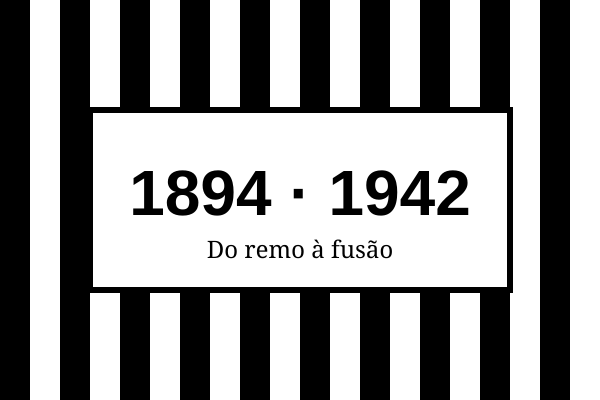
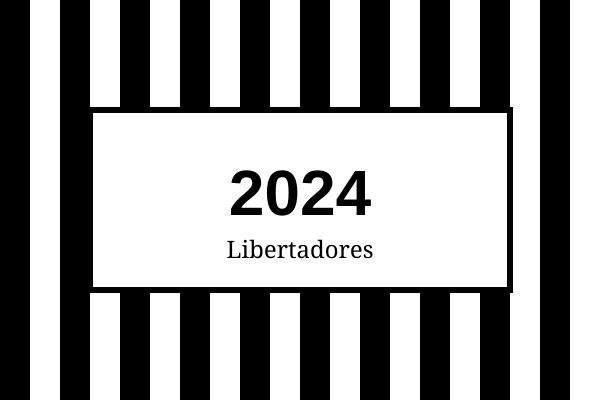
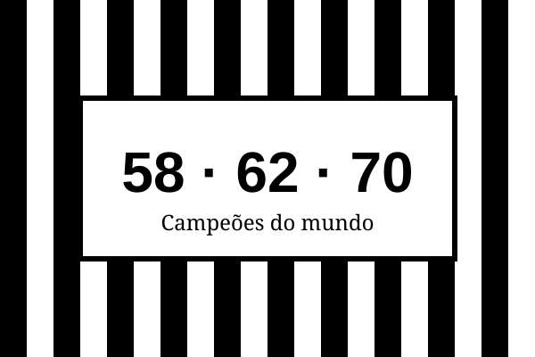

Glorioso: a história do Botafogo
Do clube de remo fundado em 1894 à Libertadores de 2024, passando pela fusão de 1942, pelos campeões do mundo de 1958, 1962 e 1970 e por um episódio pouco lembrado da ditadura.
Sobre o blog
Este blog conta a trajetória do Botafogo de Futebol e Regatas de forma direta e com fontes citadas. A ideia é mostrar que o clube é muito mais que a Estrela Solitária: é origem no remo, fusão, mascotes, resistência, jejuns, ídolos que ajudaram o Brasil a ser o país do futebol e um título continental inédito.
São três conteúdos de destaque, abaixo. Cada imagem leva à página completa.
Conteúdos em destaque

História Origem no remo, fusão, mascotes e a invasão de General Severiano em 1968. 
Conquistas A Libertadores de 2024, a vitória sobre o PSG e a lista de títulos. 
Lendas e Seleção Garrincha, Nilton Santos, Didi e o clube que mais cedeu jogadores em Copas.